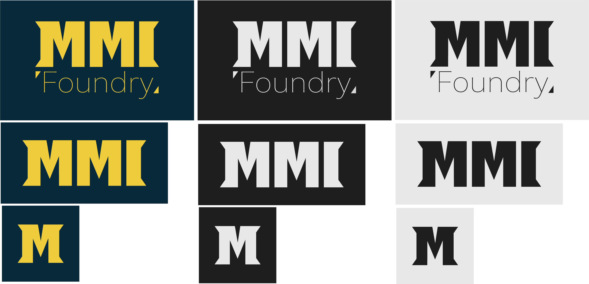
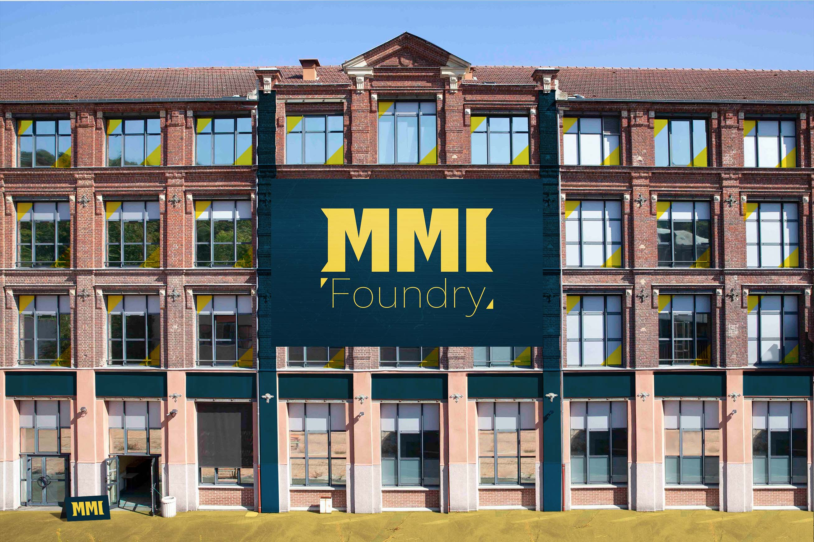
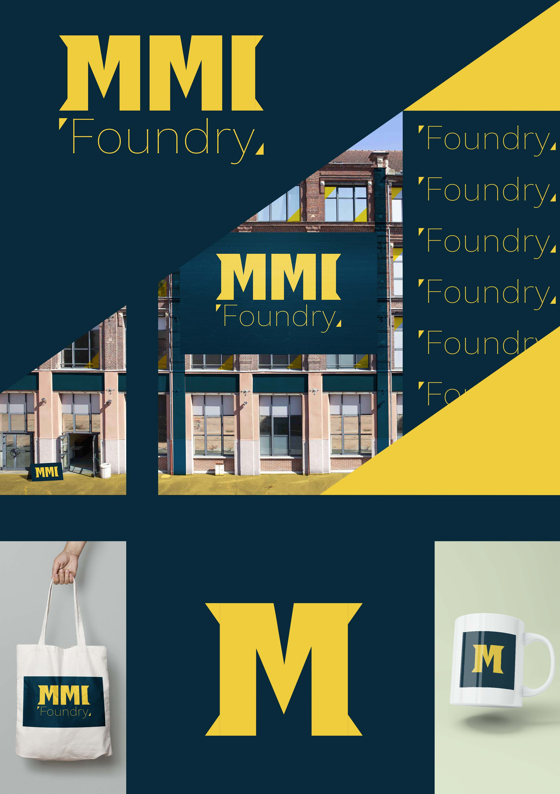
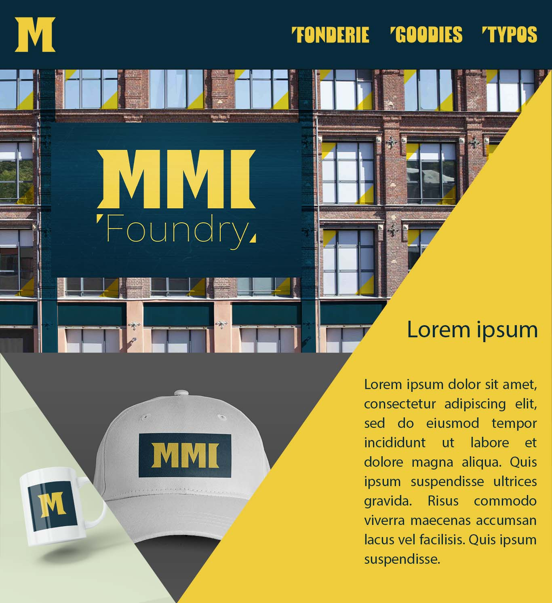
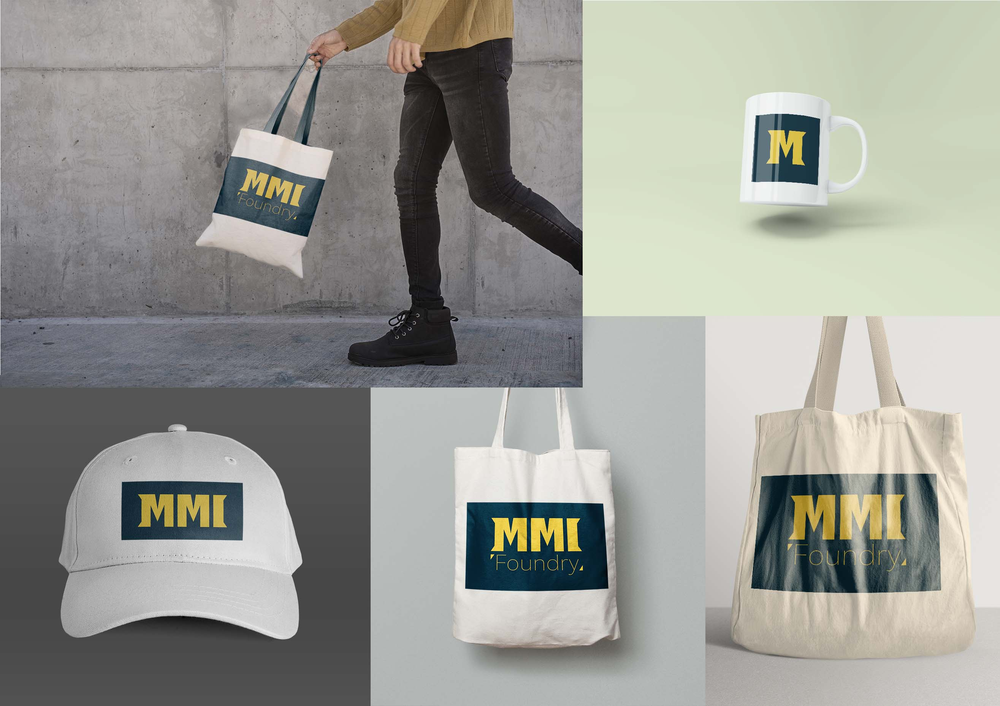

Présentation du projet
Ce projet a été réalisé en première année, je devais créer l'identité graphique d'une fonderie fictive en ligne (site qui propose des typographies). Je devais rendre plusieurs livrables tels que : un logo typographique, poser l'identité graphique sur la façade du bâtiment de l'IUT, une affiche, un prototype visuel du site web et des mockups.
Logo
Ce logo est proposé en trois version : complète, réseaux sociaux et flavicon. J'ai choisi une typographie "Normande" pour le MMI car elle permet d'avoir un impact visuel important. La partie "Foundry" en utilise une plus légère, plus fine et sans sérif pour montrer la diversité des typographies disponibles sur MMI Foundry.
Façade
J'ai décidé de mettre le logo complet en grande taille pour avoir une impression de grandeur. Un panneau est situé près de la porte d'entrée pour faciliter l'accueil des visiteurs. Pour avoir un ensemble cohérent, j'ai repris les couleurs bleu et jaune du logo. J'ai ajouté la couleur jaune aux fenêtres de la façade pour rappeler les triangles. Des bandes colorées traversent la façade pour accentuer les lignes horizontales et verticales. Enfin, le sol est repeint en jaune pour éclairer le lieu en utilisant la même couleur que le logo.
Affiche
L'affiche utilise les codes graphiques des livrables. J'ai disposé des mockups des deux côtés bas. Ils entourent le logo flavicon qui prend beaucoup de place. La version complète du logo se trouve dans le coin en haut à gauche mais aussi sur la façade. J'ai voulu que sur l'affiche on retrouve encore plus la partie "Foundry" du logo.
Site web
La façade est une image forte qui permet de montrer le logo complet sur la page d'accueil du site. J'ai également utilisé des formes géométriques notamment les triangles pour placer du texte ainsi que des mockups. Cette page donne une forte impression en jouant avec la profondeur des éléments.
Mockups
Les mockups sont de tailles variées, c'est pourquoi j'ai du utiliser les différentes versions du logo. Par exemple, pour la casquette, le logo le lpus horizontale correspond le mieux et pour la tasse c'est la forme carrée.
Mes autres projets
- Billetterie
- Covid
- Hello World
- Pasta Fresca
- Pictogrammes
- Galerie